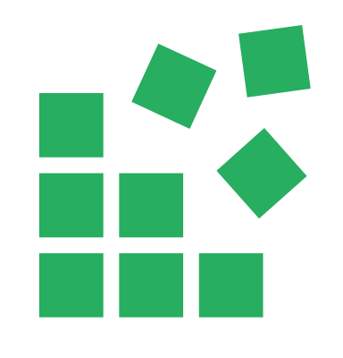

<mat-toolbar>
  <mat-toolbar-row>
    <a routerLink="/home" routerLinkActive="active"></a>
    <span class="spacer"></span>
    <a 
      routerLink="/{{ link }}" 
      routerLinkActive="active"
      *ngFor="let link of links"
    ><button
      mat-button
    >{{ link }}</button></a>
  </mat-toolbar-row>
</mat-toolbar>